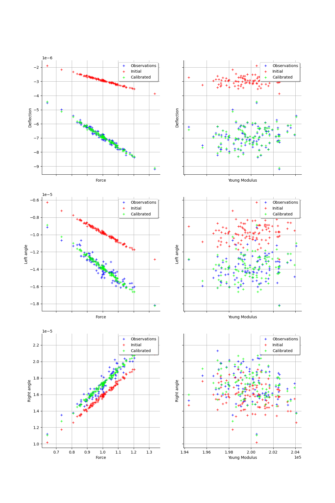
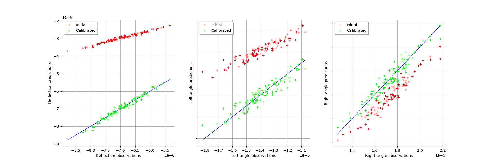
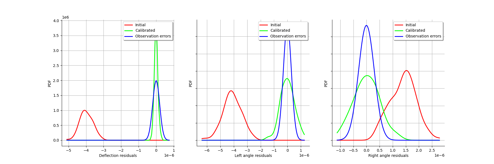
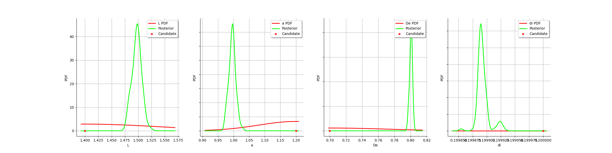

Note
Click here to download the full example code
Calibration of the deflection of a tube¶
We consider a calibration of the deflection of a tube as described here.
import openturns as ot
import openturns.viewer as viewer
from matplotlib import pylab as plt
ot.Log.Show(ot.Log.NONE)
Create a calibration problem¶
We load the model from the use case module :
from openturns.usecases import deflection_tube as deflection_tube
dt = deflection_tube.DeflectionTube()
We create a sample out of our input distribution :
sampleSize = 100
inputSample = dt.inputDistribution.getSample(sampleSize)
inputSample[0:5]
| Force | Length | Location | External diameter | Internal diameter | Young Modulus | |
|---|---|---|---|---|---|---|
| 0 | 0.8890136 | 1.5 | 1 | 0.8 | 0.1 | 199323.1 |
| 1 | 1.056105 | 1.5 | 1 | 0.8 | 0.1 | 198446.3 |
| 2 | 1.052138 | 1.5 | 1 | 0.8 | 0.1 | 202572.1 |
| 3 | 1.058734 | 1.5 | 1 | 0.8 | 0.1 | 199465 |
| 4 | 0.9325915 | 1.5 | 1 | 0.8 | 0.1 | 199179.1 |
We take the image of our input sample by the model :
outputDeflection = dt.model(inputSample)
outputDeflection[0:5]
| Deflection | Left angle | Right angle | |
|---|---|---|---|
| 0 | -6.163458e-06 | -1.232692e-05 | 1.540864e-05 |
| 1 | -7.354243e-06 | -1.470849e-05 | 1.838561e-05 |
| 2 | -7.177393e-06 | -1.435479e-05 | 1.794348e-05 |
| 3 | -7.334891e-06 | -1.466978e-05 | 1.833723e-05 |
| 4 | -6.470256e-06 | -1.294051e-05 | 1.617564e-05 |
observationNoiseSigma = [0.1e-6,0.05e-5,0.05e-5]
observationNoiseCovariance = ot.CovarianceMatrix(3)
for i in range(3):
observationNoiseCovariance[i,i] = observationNoiseSigma[i]**2
noiseSigma = ot.Normal([0.,0.,0.],observationNoiseCovariance)
sampleObservationNoise = noiseSigma.getSample(sampleSize)
observedOutput = outputDeflection + sampleObservationNoise
observedOutput[0:5]
| Deflection | Left angle | Right angle | |
|---|---|---|---|
| 0 | -6.137027e-06 | -1.244258e-05 | 1.518425e-05 |
| 1 | -7.415107e-06 | -1.441052e-05 | 1.856411e-05 |
| 2 | -7.305498e-06 | -1.315868e-05 | 1.841629e-05 |
| 3 | -7.491503e-06 | -1.433714e-05 | 1.829689e-05 |
| 4 | -6.654401e-06 | -1.285798e-05 | 1.61612e-05 |
observedInput = ot.Sample(sampleSize,2)
observedInput[:,0] = inputSample[:,0] # F
observedInput[:,1] = inputSample[:,5] # E
observedInput.setDescription(["Force","Young Modulus"])
observedInput[0:5]
| Force | Young Modulus | |
|---|---|---|
| 0 | 0.8890136 | 199323.1 |
| 1 | 1.056105 | 198446.3 |
| 2 | 1.052138 | 202572.1 |
| 3 | 1.058734 | 199465 |
| 4 | 0.9325915 | 199179.1 |
fullSample = ot.Sample(sampleSize,5)
fullSample[:,0:2] = observedInput
fullSample[:,2:5] = observedOutput
fullSample.setDescription(["Force","Young","Deflection","Left Angle","Right Angle"])
fullSample[0:5]
| Force | Young | Deflection | Left Angle | Right Angle | |
|---|---|---|---|---|---|
| 0 | 0.8890136 | 199323.1 | -6.137027e-06 | -1.244258e-05 | 1.518425e-05 |
| 1 | 1.056105 | 198446.3 | -7.415107e-06 | -1.441052e-05 | 1.856411e-05 |
| 2 | 1.052138 | 202572.1 | -7.305498e-06 | -1.315868e-05 | 1.841629e-05 |
| 3 | 1.058734 | 199465 | -7.491503e-06 | -1.433714e-05 | 1.829689e-05 |
| 4 | 0.9325915 | 199179.1 | -6.654401e-06 | -1.285798e-05 | 1.61612e-05 |
ot.Pairs(fullSample)
Out:
class=GridLayout name=Unnamed nbRows=4 nbColumns=4 graphCollection=[class=Graph name=Unnamed implementation=class=GraphImplementation name=Unnamed title= xTitle= yTitle=Young axes=ON grid=ON legendposition=topright legendFontSize=1 drawables=[class=Drawable name=Unnamed implementation=class=Cloud name=Unnamed derived from class=DrawableImplementation name=Unnamed legend= data=class=Sample name=Unnamed implementation=class=SampleImplementation name=Unnamed size=100 dimension=2 description=[Force,Young] data=[[0.889014,199323],[1.05611,198446],[1.05214,202572],[1.05873,199465],[0.932591,199179],[1.00777,200172],[1.00462,202249],[1.0914,200957],[0.892096,199435],[0.936119,197759],[0.973165,201029],[1.08524,195605],[0.880776,199095],[0.810266,204072],[0.834244,198626],[0.998441,199467],[0.916093,201432],[0.896082,203316],[1.09564,201320],[0.913968,200740],[0.945319,199261],[0.915764,201604],[1.11488,198849],[0.899837,194390],[0.919798,198850],[0.959795,199415],[1.09391,197308],[1.15014,196970],[1.13353,199061],[1.02594,199206],[1.15095,198041],[0.99739,200338],[1.01203,198714],[0.916151,200619],[1.14104,200728],[1.2043,200612],[1.12962,198526],[1.08822,199109],[1.04436,199605],[0.859889,200364],[0.859672,200127],[1.00743,200745],[1.00514,202563],[1.0204,198869],[0.994369,203930],[1.00358,202473],[1.00311,202494],[1.00144,197929],[1.07752,200139],[1.1741,199303],[1.04061,199844],[0.985584,197963],[0.952742,200539],[0.940671,201326],[1.18745,200873],[1.08165,200518],[1.00541,198579],[1.06526,200505],[1.19313,198826],[1.06106,202473],[1.08217,200139],[1.13883,201546],[0.931257,202410],[0.922966,199002],[1.00229,199691],[0.642419,200488],[0.952765,201552],[1.01392,200241],[1.08266,197075],[1.0537,200181],[1.06047,202363],[0.733461,198338],[0.995956,201670],[0.984529,197331],[0.958437,196831],[0.915613,200790],[1.06992,199869],[0.925824,201237],[0.897915,203584],[0.969809,201375],[0.877756,196961],[1.33437,202541],[0.909226,201254],[0.967974,203281],[0.933696,201915],[0.997318,197681],[0.86015,201285],[0.849011,199679],[1.06806,201667],[0.995102,199885],[1.10534,197788],[0.924741,197457],[0.8546,202311],[0.99082,196586],[0.95803,197099],[1.04792,197285],[1.12951,197262],[0.974738,199468],[0.975859,198028],[1.0163,200683]] color=blue fillStyle=solid lineStyle=solid pointStyle=fsquare lineWidth=1],class=Graph name=Unnamed implementation=class=GraphImplementation name=Unnamed title= xTitle= yTitle= axes=OFF grid=OFF legendposition= legendFontSize=1 drawables=[],class=Graph name=Unnamed implementation=class=GraphImplementation name=Unnamed title= xTitle= yTitle= axes=OFF grid=OFF legendposition= legendFontSize=1 drawables=[],class=Graph name=Unnamed implementation=class=GraphImplementation name=Unnamed title= xTitle= yTitle= axes=OFF grid=OFF legendposition= legendFontSize=1 drawables=[],class=Graph name=Unnamed implementation=class=GraphImplementation name=Unnamed title= xTitle= yTitle=Deflection axes=ON grid=ON legendposition=topright legendFontSize=1 drawables=[class=Drawable name=Unnamed implementation=class=Cloud name=Unnamed derived from class=DrawableImplementation name=Unnamed legend= data=class=Sample name=Unnamed implementation=class=SampleImplementation name=Unnamed size=100 dimension=2 description=[Force,Deflection] data=[[0.889014,-6.13703e-06],[1.05611,-7.41511e-06],[1.05214,-7.3055e-06],[1.05873,-7.4915e-06],[0.932591,-6.6544e-06],[1.00777,-6.95942e-06],[1.00462,-6.89583e-06],[1.0914,-7.53971e-06],[0.892096,-6.23899e-06],[0.936119,-6.72607e-06],[0.973165,-6.79407e-06],[1.08524,-7.52506e-06],[0.880776,-6.09097e-06],[0.810266,-5.4208e-06],[0.834244,-5.89218e-06],[0.998441,-6.87055e-06],[0.916093,-6.28556e-06],[0.896082,-6.13315e-06],[1.09564,-7.65628e-06],[0.913968,-6.37209e-06],[0.945319,-6.65765e-06],[0.915764,-6.19959e-06],[1.11488,-7.7951e-06],[0.899837,-6.21942e-06],[0.919798,-6.31009e-06],[0.959795,-6.72236e-06],[1.09391,-7.7882e-06],[1.15014,-8.20347e-06],[1.13353,-7.83271e-06],[1.02594,-7.08906e-06],[1.15095,-7.95425e-06],[0.99739,-6.8661e-06],[1.01203,-7.05425e-06],[0.916151,-6.16406e-06],[1.14104,-7.83674e-06],[1.2043,-8.357e-06],[1.12962,-7.75977e-06],[1.08822,-7.36447e-06],[1.04436,-7.12664e-06],[0.859889,-5.97419e-06],[0.859672,-6.04531e-06],[1.00743,-6.90366e-06],[1.00514,-6.76055e-06],[1.0204,-7.05192e-06],[0.994369,-6.7843e-06],[1.00358,-6.74079e-06],[1.00311,-6.85223e-06],[1.00144,-7.12691e-06],[1.07752,-7.33288e-06],[1.1741,-8.05205e-06],[1.04061,-7.13665e-06],[0.985584,-6.87745e-06],[0.952742,-6.64118e-06],[0.940671,-6.50721e-06],[1.18745,-8.2354e-06],[1.08165,-7.45246e-06],[1.00541,-7.12051e-06],[1.06526,-7.21301e-06],[1.19313,-8.3067e-06],[1.06106,-7.15802e-06],[1.08217,-7.63287e-06],[1.13883,-7.7931e-06],[0.931257,-6.27835e-06],[0.922966,-6.19589e-06],[1.00229,-6.95816e-06],[0.642419,-4.5119e-06],[0.952765,-6.50008e-06],[1.01392,-7.19487e-06],[1.08266,-7.65899e-06],[1.0537,-7.34107e-06],[1.06047,-7.2077e-06],[0.733461,-4.98691e-06],[0.995956,-6.73016e-06],[0.984529,-6.78001e-06],[0.958437,-6.64781e-06],[0.915613,-6.30706e-06],[1.06992,-7.40086e-06],[0.925824,-6.36863e-06],[0.897915,-6.27702e-06],[0.969809,-6.53112e-06],[0.877756,-6.19406e-06],[1.33437,-9.19821e-06],[0.909226,-6.26262e-06],[0.967974,-6.50529e-06],[0.933696,-6.42992e-06],[0.997318,-6.88617e-06],[0.86015,-5.89983e-06],[0.849011,-5.90663e-06],[1.06806,-7.36428e-06],[0.995102,-7.1092e-06],[1.10534,-7.81391e-06],[0.924741,-6.46451e-06],[0.8546,-5.72043e-06],[0.99082,-6.88369e-06],[0.95803,-6.78522e-06],[1.04792,-7.43439e-06],[1.12951,-7.7959e-06],[0.974738,-6.76193e-06],[0.975859,-6.94149e-06],[1.0163,-7.10926e-06]] color=blue fillStyle=solid lineStyle=solid pointStyle=fsquare lineWidth=1],class=Graph name=Unnamed implementation=class=GraphImplementation name=Unnamed title= xTitle= yTitle= axes=ON grid=ON legendposition=topright legendFontSize=1 drawables=[class=Drawable name=Unnamed implementation=class=Cloud name=Unnamed derived from class=DrawableImplementation name=Unnamed legend= data=class=Sample name=Unnamed implementation=class=SampleImplementation name=Unnamed size=100 dimension=2 description=[Young,Deflection] data=[[199323,-6.13703e-06],[198446,-7.41511e-06],[202572,-7.3055e-06],[199465,-7.4915e-06],[199179,-6.6544e-06],[200172,-6.95942e-06],[202249,-6.89583e-06],[200957,-7.53971e-06],[199435,-6.23899e-06],[197759,-6.72607e-06],[201029,-6.79407e-06],[195605,-7.52506e-06],[199095,-6.09097e-06],[204072,-5.4208e-06],[198626,-5.89218e-06],[199467,-6.87055e-06],[201432,-6.28556e-06],[203316,-6.13315e-06],[201320,-7.65628e-06],[200740,-6.37209e-06],[199261,-6.65765e-06],[201604,-6.19959e-06],[198849,-7.7951e-06],[194390,-6.21942e-06],[198850,-6.31009e-06],[199415,-6.72236e-06],[197308,-7.7882e-06],[196970,-8.20347e-06],[199061,-7.83271e-06],[199206,-7.08906e-06],[198041,-7.95425e-06],[200338,-6.8661e-06],[198714,-7.05425e-06],[200619,-6.16406e-06],[200728,-7.83674e-06],[200612,-8.357e-06],[198526,-7.75977e-06],[199109,-7.36447e-06],[199605,-7.12664e-06],[200364,-5.97419e-06],[200127,-6.04531e-06],[200745,-6.90366e-06],[202563,-6.76055e-06],[198869,-7.05192e-06],[203930,-6.7843e-06],[202473,-6.74079e-06],[202494,-6.85223e-06],[197929,-7.12691e-06],[200139,-7.33288e-06],[199303,-8.05205e-06],[199844,-7.13665e-06],[197963,-6.87745e-06],[200539,-6.64118e-06],[201326,-6.50721e-06],[200873,-8.2354e-06],[200518,-7.45246e-06],[198579,-7.12051e-06],[200505,-7.21301e-06],[198826,-8.3067e-06],[202473,-7.15802e-06],[200139,-7.63287e-06],[201546,-7.7931e-06],[202410,-6.27835e-06],[199002,-6.19589e-06],[199691,-6.95816e-06],[200488,-4.5119e-06],[201552,-6.50008e-06],[200241,-7.19487e-06],[197075,-7.65899e-06],[200181,-7.34107e-06],[202363,-7.2077e-06],[198338,-4.98691e-06],[201670,-6.73016e-06],[197331,-6.78001e-06],[196831,-6.64781e-06],[200790,-6.30706e-06],[199869,-7.40086e-06],[201237,-6.36863e-06],[203584,-6.27702e-06],[201375,-6.53112e-06],[196961,-6.19406e-06],[202541,-9.19821e-06],[201254,-6.26262e-06],[203281,-6.50529e-06],[201915,-6.42992e-06],[197681,-6.88617e-06],[201285,-5.89983e-06],[199679,-5.90663e-06],[201667,-7.36428e-06],[199885,-7.1092e-06],[197788,-7.81391e-06],[197457,-6.46451e-06],[202311,-5.72043e-06],[196586,-6.88369e-06],[197099,-6.78522e-06],[197285,-7.43439e-06],[197262,-7.7959e-06],[199468,-6.76193e-06],[198028,-6.94149e-06],[200683,-7.10926e-06]] color=blue fillStyle=solid lineStyle=solid pointStyle=fsquare lineWidth=1],class=Graph name=Unnamed implementation=class=GraphImplementation name=Unnamed title= xTitle= yTitle= axes=OFF grid=OFF legendposition= legendFontSize=1 drawables=[],class=Graph name=Unnamed implementation=class=GraphImplementation name=Unnamed title= xTitle= yTitle= axes=OFF grid=OFF legendposition= legendFontSize=1 drawables=[],class=Graph name=Unnamed implementation=class=GraphImplementation name=Unnamed title= xTitle= yTitle=Left Angle axes=ON grid=ON legendposition=topright legendFontSize=1 drawables=[class=Drawable name=Unnamed implementation=class=Cloud name=Unnamed derived from class=DrawableImplementation name=Unnamed legend= data=class=Sample name=Unnamed implementation=class=SampleImplementation name=Unnamed size=100 dimension=2 description=[Force,Left Angle] data=[[0.889014,-1.24426e-05],[1.05611,-1.44105e-05],[1.05214,-1.31587e-05],[1.05873,-1.43371e-05],[0.932591,-1.2858e-05],[1.00777,-1.45795e-05],[1.00462,-1.31195e-05],[1.0914,-1.42969e-05],[0.892096,-1.23199e-05],[0.936119,-1.27678e-05],[0.973165,-1.3473e-05],[1.08524,-1.59228e-05],[0.880776,-1.20874e-05],[0.810266,-1.1323e-05],[0.834244,-1.11911e-05],[0.998441,-1.42046e-05],[0.916093,-1.23782e-05],[0.896082,-1.22177e-05],[1.09564,-1.54296e-05],[0.913968,-1.2516e-05],[0.945319,-1.34322e-05],[0.915764,-1.2189e-05],[1.11488,-1.61175e-05],[0.899837,-1.29039e-05],[0.919798,-1.27003e-05],[0.959795,-1.2848e-05],[1.09391,-1.55336e-05],[1.15014,-1.61556e-05],[1.13353,-1.5934e-05],[1.02594,-1.41877e-05],[1.15095,-1.6028e-05],[0.99739,-1.38462e-05],[1.01203,-1.49851e-05],[0.916151,-1.30086e-05],[1.14104,-1.5658e-05],[1.2043,-1.60398e-05],[1.12962,-1.52111e-05],[1.08822,-1.53613e-05],[1.04436,-1.43808e-05],[0.859889,-1.06497e-05],[0.859672,-1.24734e-05],[1.00743,-1.37279e-05],[1.00514,-1.36127e-05],[1.0204,-1.33883e-05],[0.994369,-1.487e-05],[1.00358,-1.44122e-05],[1.00311,-1.39335e-05],[1.00144,-1.45752e-05],[1.07752,-1.53848e-05],[1.1741,-1.56376e-05],[1.04061,-1.43577e-05],[0.985584,-1.38465e-05],[0.952742,-1.30714e-05],[0.940671,-1.30881e-05],[1.18745,-1.55994e-05],[1.08165,-1.44145e-05],[1.00541,-1.36941e-05],[1.06526,-1.5324e-05],[1.19313,-1.61188e-05],[1.06106,-1.43108e-05],[1.08217,-1.49905e-05],[1.13883,-1.50847e-05],[0.931257,-1.30773e-05],[0.922966,-1.27208e-05],[1.00229,-1.41781e-05],[0.642419,-9.14e-06],[0.952765,-1.30551e-05],[1.01392,-1.43592e-05],[1.08266,-1.47443e-05],[1.0537,-1.42883e-05],[1.06047,-1.55785e-05],[0.733461,-1.06778e-05],[0.995956,-1.38516e-05],[0.984529,-1.3874e-05],[0.958437,-1.41565e-05],[0.915613,-1.28736e-05],[1.06992,-1.4441e-05],[0.925824,-1.273e-05],[0.897915,-1.2954e-05],[0.969809,-1.44316e-05],[0.877756,-1.25457e-05],[1.33437,-1.81612e-05],[0.909226,-1.21505e-05],[0.967974,-1.32456e-05],[0.933696,-1.2017e-05],[0.997318,-1.46413e-05],[0.86015,-1.24598e-05],[0.849011,-1.11237e-05],[1.06806,-1.40825e-05],[0.995102,-1.35324e-05],[1.10534,-1.56294e-05],[0.924741,-1.31684e-05],[0.8546,-1.12493e-05],[0.99082,-1.49942e-05],[0.95803,-1.35707e-05],[1.04792,-1.43318e-05],[1.12951,-1.54266e-05],[0.974738,-1.38431e-05],[0.975859,-1.38195e-05],[1.0163,-1.41038e-05]] color=blue fillStyle=solid lineStyle=solid pointStyle=fsquare lineWidth=1],class=Graph name=Unnamed implementation=class=GraphImplementation name=Unnamed title= xTitle= yTitle= axes=ON grid=ON legendposition=topright legendFontSize=1 drawables=[class=Drawable name=Unnamed implementation=class=Cloud name=Unnamed derived from class=DrawableImplementation name=Unnamed legend= data=class=Sample name=Unnamed implementation=class=SampleImplementation name=Unnamed size=100 dimension=2 description=[Young,Left Angle] data=[[199323,-1.24426e-05],[198446,-1.44105e-05],[202572,-1.31587e-05],[199465,-1.43371e-05],[199179,-1.2858e-05],[200172,-1.45795e-05],[202249,-1.31195e-05],[200957,-1.42969e-05],[199435,-1.23199e-05],[197759,-1.27678e-05],[201029,-1.3473e-05],[195605,-1.59228e-05],[199095,-1.20874e-05],[204072,-1.1323e-05],[198626,-1.11911e-05],[199467,-1.42046e-05],[201432,-1.23782e-05],[203316,-1.22177e-05],[201320,-1.54296e-05],[200740,-1.2516e-05],[199261,-1.34322e-05],[201604,-1.2189e-05],[198849,-1.61175e-05],[194390,-1.29039e-05],[198850,-1.27003e-05],[199415,-1.2848e-05],[197308,-1.55336e-05],[196970,-1.61556e-05],[199061,-1.5934e-05],[199206,-1.41877e-05],[198041,-1.6028e-05],[200338,-1.38462e-05],[198714,-1.49851e-05],[200619,-1.30086e-05],[200728,-1.5658e-05],[200612,-1.60398e-05],[198526,-1.52111e-05],[199109,-1.53613e-05],[199605,-1.43808e-05],[200364,-1.06497e-05],[200127,-1.24734e-05],[200745,-1.37279e-05],[202563,-1.36127e-05],[198869,-1.33883e-05],[203930,-1.487e-05],[202473,-1.44122e-05],[202494,-1.39335e-05],[197929,-1.45752e-05],[200139,-1.53848e-05],[199303,-1.56376e-05],[199844,-1.43577e-05],[197963,-1.38465e-05],[200539,-1.30714e-05],[201326,-1.30881e-05],[200873,-1.55994e-05],[200518,-1.44145e-05],[198579,-1.36941e-05],[200505,-1.5324e-05],[198826,-1.61188e-05],[202473,-1.43108e-05],[200139,-1.49905e-05],[201546,-1.50847e-05],[202410,-1.30773e-05],[199002,-1.27208e-05],[199691,-1.41781e-05],[200488,-9.14e-06],[201552,-1.30551e-05],[200241,-1.43592e-05],[197075,-1.47443e-05],[200181,-1.42883e-05],[202363,-1.55785e-05],[198338,-1.06778e-05],[201670,-1.38516e-05],[197331,-1.3874e-05],[196831,-1.41565e-05],[200790,-1.28736e-05],[199869,-1.4441e-05],[201237,-1.273e-05],[203584,-1.2954e-05],[201375,-1.44316e-05],[196961,-1.25457e-05],[202541,-1.81612e-05],[201254,-1.21505e-05],[203281,-1.32456e-05],[201915,-1.2017e-05],[197681,-1.46413e-05],[201285,-1.24598e-05],[199679,-1.11237e-05],[201667,-1.40825e-05],[199885,-1.35324e-05],[197788,-1.56294e-05],[197457,-1.31684e-05],[202311,-1.12493e-05],[196586,-1.49942e-05],[197099,-1.35707e-05],[197285,-1.43318e-05],[197262,-1.54266e-05],[199468,-1.38431e-05],[198028,-1.38195e-05],[200683,-1.41038e-05]] color=blue fillStyle=solid lineStyle=solid pointStyle=fsquare lineWidth=1],class=Graph name=Unnamed implementation=class=GraphImplementation name=Unnamed title= xTitle= yTitle= axes=ON grid=ON legendposition=topright legendFontSize=1 drawables=[class=Drawable name=Unnamed implementation=class=Cloud name=Unnamed derived from class=DrawableImplementation name=Unnamed legend= data=class=Sample name=Unnamed implementation=class=SampleImplementation name=Unnamed size=100 dimension=2 description=[Deflection,Left Angle] data=[[-6.13703e-06,-1.24426e-05],[-7.41511e-06,-1.44105e-05],[-7.3055e-06,-1.31587e-05],[-7.4915e-06,-1.43371e-05],[-6.6544e-06,-1.2858e-05],[-6.95942e-06,-1.45795e-05],[-6.89583e-06,-1.31195e-05],[-7.53971e-06,-1.42969e-05],[-6.23899e-06,-1.23199e-05],[-6.72607e-06,-1.27678e-05],[-6.79407e-06,-1.3473e-05],[-7.52506e-06,-1.59228e-05],[-6.09097e-06,-1.20874e-05],[-5.4208e-06,-1.1323e-05],[-5.89218e-06,-1.11911e-05],[-6.87055e-06,-1.42046e-05],[-6.28556e-06,-1.23782e-05],[-6.13315e-06,-1.22177e-05],[-7.65628e-06,-1.54296e-05],[-6.37209e-06,-1.2516e-05],[-6.65765e-06,-1.34322e-05],[-6.19959e-06,-1.2189e-05],[-7.7951e-06,-1.61175e-05],[-6.21942e-06,-1.29039e-05],[-6.31009e-06,-1.27003e-05],[-6.72236e-06,-1.2848e-05],[-7.7882e-06,-1.55336e-05],[-8.20347e-06,-1.61556e-05],[-7.83271e-06,-1.5934e-05],[-7.08906e-06,-1.41877e-05],[-7.95425e-06,-1.6028e-05],[-6.8661e-06,-1.38462e-05],[-7.05425e-06,-1.49851e-05],[-6.16406e-06,-1.30086e-05],[-7.83674e-06,-1.5658e-05],[-8.357e-06,-1.60398e-05],[-7.75977e-06,-1.52111e-05],[-7.36447e-06,-1.53613e-05],[-7.12664e-06,-1.43808e-05],[-5.97419e-06,-1.06497e-05],[-6.04531e-06,-1.24734e-05],[-6.90366e-06,-1.37279e-05],[-6.76055e-06,-1.36127e-05],[-7.05192e-06,-1.33883e-05],[-6.7843e-06,-1.487e-05],[-6.74079e-06,-1.44122e-05],[-6.85223e-06,-1.39335e-05],[-7.12691e-06,-1.45752e-05],[-7.33288e-06,-1.53848e-05],[-8.05205e-06,-1.56376e-05],[-7.13665e-06,-1.43577e-05],[-6.87745e-06,-1.38465e-05],[-6.64118e-06,-1.30714e-05],[-6.50721e-06,-1.30881e-05],[-8.2354e-06,-1.55994e-05],[-7.45246e-06,-1.44145e-05],[-7.12051e-06,-1.36941e-05],[-7.21301e-06,-1.5324e-05],[-8.3067e-06,-1.61188e-05],[-7.15802e-06,-1.43108e-05],[-7.63287e-06,-1.49905e-05],[-7.7931e-06,-1.50847e-05],[-6.27835e-06,-1.30773e-05],[-6.19589e-06,-1.27208e-05],[-6.95816e-06,-1.41781e-05],[-4.5119e-06,-9.14e-06],[-6.50008e-06,-1.30551e-05],[-7.19487e-06,-1.43592e-05],[-7.65899e-06,-1.47443e-05],[-7.34107e-06,-1.42883e-05],[-7.2077e-06,-1.55785e-05],[-4.98691e-06,-1.06778e-05],[-6.73016e-06,-1.38516e-05],[-6.78001e-06,-1.3874e-05],[-6.64781e-06,-1.41565e-05],[-6.30706e-06,-1.28736e-05],[-7.40086e-06,-1.4441e-05],[-6.36863e-06,-1.273e-05],[-6.27702e-06,-1.2954e-05],[-6.53112e-06,-1.44316e-05],[-6.19406e-06,-1.25457e-05],[-9.19821e-06,-1.81612e-05],[-6.26262e-06,-1.21505e-05],[-6.50529e-06,-1.32456e-05],[-6.42992e-06,-1.2017e-05],[-6.88617e-06,-1.46413e-05],[-5.89983e-06,-1.24598e-05],[-5.90663e-06,-1.11237e-05],[-7.36428e-06,-1.40825e-05],[-7.1092e-06,-1.35324e-05],[-7.81391e-06,-1.56294e-05],[-6.46451e-06,-1.31684e-05],[-5.72043e-06,-1.12493e-05],[-6.88369e-06,-1.49942e-05],[-6.78522e-06,-1.35707e-05],[-7.43439e-06,-1.43318e-05],[-7.7959e-06,-1.54266e-05],[-6.76193e-06,-1.38431e-05],[-6.94149e-06,-1.38195e-05],[-7.10926e-06,-1.41038e-05]] color=blue fillStyle=solid lineStyle=solid pointStyle=fsquare lineWidth=1],class=Graph name=Unnamed implementation=class=GraphImplementation name=Unnamed title= xTitle= yTitle= axes=OFF grid=OFF legendposition= legendFontSize=1 drawables=[],class=Graph name=Unnamed implementation=class=GraphImplementation name=Unnamed title= xTitle=Force yTitle=Right Angle axes=ON grid=ON legendposition=topright legendFontSize=1 drawables=[class=Drawable name=Unnamed implementation=class=Cloud name=Unnamed derived from class=DrawableImplementation name=Unnamed legend= data=class=Sample name=Unnamed implementation=class=SampleImplementation name=Unnamed size=100 dimension=2 description=[Force,Right Angle] data=[[0.889014,1.51842e-05],[1.05611,1.85641e-05],[1.05214,1.84163e-05],[1.05873,1.82969e-05],[0.932591,1.61612e-05],[1.00777,1.61455e-05],[1.00462,1.69692e-05],[1.0914,1.89249e-05],[0.892096,1.52095e-05],[0.936119,1.56759e-05],[0.973165,1.61409e-05],[1.08524,1.82894e-05],[0.880776,1.4545e-05],[0.810266,1.37777e-05],[0.834244,1.48783e-05],[0.998441,1.66906e-05],[0.916093,1.57289e-05],[0.896082,1.47368e-05],[1.09564,1.8707e-05],[0.913968,1.55577e-05],[0.945319,1.66957e-05],[0.915764,1.56995e-05],[1.11488,1.90969e-05],[0.899837,1.52581e-05],[0.919798,1.66936e-05],[0.959795,1.55171e-05],[1.09391,1.97821e-05],[1.15014,2.1316e-05],[1.13353,1.86717e-05],[1.02594,1.77794e-05],[1.15095,2.01989e-05],[0.99739,1.66082e-05],[1.01203,1.70994e-05],[0.916151,1.58702e-05],[1.14104,2.03562e-05],[1.2043,2.04166e-05],[1.12962,1.94225e-05],[1.08822,1.98233e-05],[1.04436,1.93031e-05],[0.859889,1.48109e-05],[0.859672,1.5128e-05],[1.00743,1.74093e-05],[1.00514,1.72754e-05],[1.0204,1.70806e-05],[0.994369,1.7356e-05],[1.00358,1.68331e-05],[1.00311,1.63151e-05],[1.00144,1.72589e-05],[1.07752,2.02241e-05],[1.1741,2.00372e-05],[1.04061,1.87953e-05],[0.985584,1.66871e-05],[0.952742,1.58223e-05],[0.940671,1.62631e-05],[1.18745,2.08301e-05],[1.08165,1.84386e-05],[1.00541,1.80801e-05],[1.06526,1.87735e-05],[1.19313,2.0034e-05],[1.06106,1.8602e-05],[1.08217,1.79465e-05],[1.13883,1.93865e-05],[0.931257,1.54552e-05],[0.922966,1.57999e-05],[1.00229,1.72449e-05],[0.642419,1.11993e-05],[0.952765,1.59557e-05],[1.01392,1.74979e-05],[1.08266,1.90853e-05],[1.0537,1.78102e-05],[1.06047,1.80029e-05],[0.733461,1.35059e-05],[0.995956,1.71675e-05],[0.984529,1.71598e-05],[0.958437,1.6641e-05],[0.915613,1.59422e-05],[1.06992,1.9094e-05],[0.925824,1.59627e-05],[0.897915,1.54073e-05],[0.969809,1.58275e-05],[0.877756,1.60492e-05],[1.33437,2.24712e-05],[0.909226,1.6109e-05],[0.967974,1.66884e-05],[0.933696,1.61607e-05],[0.997318,1.70125e-05],[0.86015,1.53327e-05],[0.849011,1.47436e-05],[1.06806,1.87695e-05],[0.995102,1.72597e-05],[1.10534,1.9354e-05],[0.924741,1.59867e-05],[0.8546,1.4797e-05],[0.99082,1.82542e-05],[0.95803,1.67122e-05],[1.04792,1.79574e-05],[1.12951,1.98194e-05],[0.974738,1.6357e-05],[0.975859,1.7104e-05],[1.0163,1.76733e-05]] color=blue fillStyle=solid lineStyle=solid pointStyle=fsquare lineWidth=1],class=Graph name=Unnamed implementation=class=GraphImplementation name=Unnamed title= xTitle=Young yTitle= axes=ON grid=ON legendposition=topright legendFontSize=1 drawables=[class=Drawable name=Unnamed implementation=class=Cloud name=Unnamed derived from class=DrawableImplementation name=Unnamed legend= data=class=Sample name=Unnamed implementation=class=SampleImplementation name=Unnamed size=100 dimension=2 description=[Young,Right Angle] data=[[199323,1.51842e-05],[198446,1.85641e-05],[202572,1.84163e-05],[199465,1.82969e-05],[199179,1.61612e-05],[200172,1.61455e-05],[202249,1.69692e-05],[200957,1.89249e-05],[199435,1.52095e-05],[197759,1.56759e-05],[201029,1.61409e-05],[195605,1.82894e-05],[199095,1.4545e-05],[204072,1.37777e-05],[198626,1.48783e-05],[199467,1.66906e-05],[201432,1.57289e-05],[203316,1.47368e-05],[201320,1.8707e-05],[200740,1.55577e-05],[199261,1.66957e-05],[201604,1.56995e-05],[198849,1.90969e-05],[194390,1.52581e-05],[198850,1.66936e-05],[199415,1.55171e-05],[197308,1.97821e-05],[196970,2.1316e-05],[199061,1.86717e-05],[199206,1.77794e-05],[198041,2.01989e-05],[200338,1.66082e-05],[198714,1.70994e-05],[200619,1.58702e-05],[200728,2.03562e-05],[200612,2.04166e-05],[198526,1.94225e-05],[199109,1.98233e-05],[199605,1.93031e-05],[200364,1.48109e-05],[200127,1.5128e-05],[200745,1.74093e-05],[202563,1.72754e-05],[198869,1.70806e-05],[203930,1.7356e-05],[202473,1.68331e-05],[202494,1.63151e-05],[197929,1.72589e-05],[200139,2.02241e-05],[199303,2.00372e-05],[199844,1.87953e-05],[197963,1.66871e-05],[200539,1.58223e-05],[201326,1.62631e-05],[200873,2.08301e-05],[200518,1.84386e-05],[198579,1.80801e-05],[200505,1.87735e-05],[198826,2.0034e-05],[202473,1.8602e-05],[200139,1.79465e-05],[201546,1.93865e-05],[202410,1.54552e-05],[199002,1.57999e-05],[199691,1.72449e-05],[200488,1.11993e-05],[201552,1.59557e-05],[200241,1.74979e-05],[197075,1.90853e-05],[200181,1.78102e-05],[202363,1.80029e-05],[198338,1.35059e-05],[201670,1.71675e-05],[197331,1.71598e-05],[196831,1.6641e-05],[200790,1.59422e-05],[199869,1.9094e-05],[201237,1.59627e-05],[203584,1.54073e-05],[201375,1.58275e-05],[196961,1.60492e-05],[202541,2.24712e-05],[201254,1.6109e-05],[203281,1.66884e-05],[201915,1.61607e-05],[197681,1.70125e-05],[201285,1.53327e-05],[199679,1.47436e-05],[201667,1.87695e-05],[199885,1.72597e-05],[197788,1.9354e-05],[197457,1.59867e-05],[202311,1.4797e-05],[196586,1.82542e-05],[197099,1.67122e-05],[197285,1.79574e-05],[197262,1.98194e-05],[199468,1.6357e-05],[198028,1.7104e-05],[200683,1.76733e-05]] color=blue fillStyle=solid lineStyle=solid pointStyle=fsquare lineWidth=1],class=Graph name=Unnamed implementation=class=GraphImplementation name=Unnamed title= xTitle=Deflection yTitle= axes=ON grid=ON legendposition=topright legendFontSize=1 drawables=[class=Drawable name=Unnamed implementation=class=Cloud name=Unnamed derived from class=DrawableImplementation name=Unnamed legend= data=class=Sample name=Unnamed implementation=class=SampleImplementation name=Unnamed size=100 dimension=2 description=[Deflection,Right Angle] data=[[-6.13703e-06,1.51842e-05],[-7.41511e-06,1.85641e-05],[-7.3055e-06,1.84163e-05],[-7.4915e-06,1.82969e-05],[-6.6544e-06,1.61612e-05],[-6.95942e-06,1.61455e-05],[-6.89583e-06,1.69692e-05],[-7.53971e-06,1.89249e-05],[-6.23899e-06,1.52095e-05],[-6.72607e-06,1.56759e-05],[-6.79407e-06,1.61409e-05],[-7.52506e-06,1.82894e-05],[-6.09097e-06,1.4545e-05],[-5.4208e-06,1.37777e-05],[-5.89218e-06,1.48783e-05],[-6.87055e-06,1.66906e-05],[-6.28556e-06,1.57289e-05],[-6.13315e-06,1.47368e-05],[-7.65628e-06,1.8707e-05],[-6.37209e-06,1.55577e-05],[-6.65765e-06,1.66957e-05],[-6.19959e-06,1.56995e-05],[-7.7951e-06,1.90969e-05],[-6.21942e-06,1.52581e-05],[-6.31009e-06,1.66936e-05],[-6.72236e-06,1.55171e-05],[-7.7882e-06,1.97821e-05],[-8.20347e-06,2.1316e-05],[-7.83271e-06,1.86717e-05],[-7.08906e-06,1.77794e-05],[-7.95425e-06,2.01989e-05],[-6.8661e-06,1.66082e-05],[-7.05425e-06,1.70994e-05],[-6.16406e-06,1.58702e-05],[-7.83674e-06,2.03562e-05],[-8.357e-06,2.04166e-05],[-7.75977e-06,1.94225e-05],[-7.36447e-06,1.98233e-05],[-7.12664e-06,1.93031e-05],[-5.97419e-06,1.48109e-05],[-6.04531e-06,1.5128e-05],[-6.90366e-06,1.74093e-05],[-6.76055e-06,1.72754e-05],[-7.05192e-06,1.70806e-05],[-6.7843e-06,1.7356e-05],[-6.74079e-06,1.68331e-05],[-6.85223e-06,1.63151e-05],[-7.12691e-06,1.72589e-05],[-7.33288e-06,2.02241e-05],[-8.05205e-06,2.00372e-05],[-7.13665e-06,1.87953e-05],[-6.87745e-06,1.66871e-05],[-6.64118e-06,1.58223e-05],[-6.50721e-06,1.62631e-05],[-8.2354e-06,2.08301e-05],[-7.45246e-06,1.84386e-05],[-7.12051e-06,1.80801e-05],[-7.21301e-06,1.87735e-05],[-8.3067e-06,2.0034e-05],[-7.15802e-06,1.8602e-05],[-7.63287e-06,1.79465e-05],[-7.7931e-06,1.93865e-05],[-6.27835e-06,1.54552e-05],[-6.19589e-06,1.57999e-05],[-6.95816e-06,1.72449e-05],[-4.5119e-06,1.11993e-05],[-6.50008e-06,1.59557e-05],[-7.19487e-06,1.74979e-05],[-7.65899e-06,1.90853e-05],[-7.34107e-06,1.78102e-05],[-7.2077e-06,1.80029e-05],[-4.98691e-06,1.35059e-05],[-6.73016e-06,1.71675e-05],[-6.78001e-06,1.71598e-05],[-6.64781e-06,1.6641e-05],[-6.30706e-06,1.59422e-05],[-7.40086e-06,1.9094e-05],[-6.36863e-06,1.59627e-05],[-6.27702e-06,1.54073e-05],[-6.53112e-06,1.58275e-05],[-6.19406e-06,1.60492e-05],[-9.19821e-06,2.24712e-05],[-6.26262e-06,1.6109e-05],[-6.50529e-06,1.66884e-05],[-6.42992e-06,1.61607e-05],[-6.88617e-06,1.70125e-05],[-5.89983e-06,1.53327e-05],[-5.90663e-06,1.47436e-05],[-7.36428e-06,1.87695e-05],[-7.1092e-06,1.72597e-05],[-7.81391e-06,1.9354e-05],[-6.46451e-06,1.59867e-05],[-5.72043e-06,1.4797e-05],[-6.88369e-06,1.82542e-05],[-6.78522e-06,1.67122e-05],[-7.43439e-06,1.79574e-05],[-7.7959e-06,1.98194e-05],[-6.76193e-06,1.6357e-05],[-6.94149e-06,1.7104e-05],[-7.10926e-06,1.76733e-05]] color=blue fillStyle=solid lineStyle=solid pointStyle=fsquare lineWidth=1],class=Graph name=Unnamed implementation=class=GraphImplementation name=Unnamed title= xTitle=Left Angle yTitle= axes=ON grid=ON legendposition=topright legendFontSize=1 drawables=[class=Drawable name=Unnamed implementation=class=Cloud name=Unnamed derived from class=DrawableImplementation name=Unnamed legend= data=class=Sample name=Unnamed implementation=class=SampleImplementation name=Unnamed size=100 dimension=2 description=[Left Angle,Right Angle] data=[[-1.24426e-05,1.51842e-05],[-1.44105e-05,1.85641e-05],[-1.31587e-05,1.84163e-05],[-1.43371e-05,1.82969e-05],[-1.2858e-05,1.61612e-05],[-1.45795e-05,1.61455e-05],[-1.31195e-05,1.69692e-05],[-1.42969e-05,1.89249e-05],[-1.23199e-05,1.52095e-05],[-1.27678e-05,1.56759e-05],[-1.3473e-05,1.61409e-05],[-1.59228e-05,1.82894e-05],[-1.20874e-05,1.4545e-05],[-1.1323e-05,1.37777e-05],[-1.11911e-05,1.48783e-05],[-1.42046e-05,1.66906e-05],[-1.23782e-05,1.57289e-05],[-1.22177e-05,1.47368e-05],[-1.54296e-05,1.8707e-05],[-1.2516e-05,1.55577e-05],[-1.34322e-05,1.66957e-05],[-1.2189e-05,1.56995e-05],[-1.61175e-05,1.90969e-05],[-1.29039e-05,1.52581e-05],[-1.27003e-05,1.66936e-05],[-1.2848e-05,1.55171e-05],[-1.55336e-05,1.97821e-05],[-1.61556e-05,2.1316e-05],[-1.5934e-05,1.86717e-05],[-1.41877e-05,1.77794e-05],[-1.6028e-05,2.01989e-05],[-1.38462e-05,1.66082e-05],[-1.49851e-05,1.70994e-05],[-1.30086e-05,1.58702e-05],[-1.5658e-05,2.03562e-05],[-1.60398e-05,2.04166e-05],[-1.52111e-05,1.94225e-05],[-1.53613e-05,1.98233e-05],[-1.43808e-05,1.93031e-05],[-1.06497e-05,1.48109e-05],[-1.24734e-05,1.5128e-05],[-1.37279e-05,1.74093e-05],[-1.36127e-05,1.72754e-05],[-1.33883e-05,1.70806e-05],[-1.487e-05,1.7356e-05],[-1.44122e-05,1.68331e-05],[-1.39335e-05,1.63151e-05],[-1.45752e-05,1.72589e-05],[-1.53848e-05,2.02241e-05],[-1.56376e-05,2.00372e-05],[-1.43577e-05,1.87953e-05],[-1.38465e-05,1.66871e-05],[-1.30714e-05,1.58223e-05],[-1.30881e-05,1.62631e-05],[-1.55994e-05,2.08301e-05],[-1.44145e-05,1.84386e-05],[-1.36941e-05,1.80801e-05],[-1.5324e-05,1.87735e-05],[-1.61188e-05,2.0034e-05],[-1.43108e-05,1.8602e-05],[-1.49905e-05,1.79465e-05],[-1.50847e-05,1.93865e-05],[-1.30773e-05,1.54552e-05],[-1.27208e-05,1.57999e-05],[-1.41781e-05,1.72449e-05],[-9.14e-06,1.11993e-05],[-1.30551e-05,1.59557e-05],[-1.43592e-05,1.74979e-05],[-1.47443e-05,1.90853e-05],[-1.42883e-05,1.78102e-05],[-1.55785e-05,1.80029e-05],[-1.06778e-05,1.35059e-05],[-1.38516e-05,1.71675e-05],[-1.3874e-05,1.71598e-05],[-1.41565e-05,1.6641e-05],[-1.28736e-05,1.59422e-05],[-1.4441e-05,1.9094e-05],[-1.273e-05,1.59627e-05],[-1.2954e-05,1.54073e-05],[-1.44316e-05,1.58275e-05],[-1.25457e-05,1.60492e-05],[-1.81612e-05,2.24712e-05],[-1.21505e-05,1.6109e-05],[-1.32456e-05,1.66884e-05],[-1.2017e-05,1.61607e-05],[-1.46413e-05,1.70125e-05],[-1.24598e-05,1.53327e-05],[-1.11237e-05,1.47436e-05],[-1.40825e-05,1.87695e-05],[-1.35324e-05,1.72597e-05],[-1.56294e-05,1.9354e-05],[-1.31684e-05,1.59867e-05],[-1.12493e-05,1.4797e-05],[-1.49942e-05,1.82542e-05],[-1.35707e-05,1.67122e-05],[-1.43318e-05,1.79574e-05],[-1.54266e-05,1.98194e-05],[-1.38431e-05,1.6357e-05],[-1.38195e-05,1.7104e-05],[-1.41038e-05,1.76733e-05]] color=blue fillStyle=solid lineStyle=solid pointStyle=fsquare lineWidth=1]]
Setting up the calibration¶
XL = 1.4 # Exact : 1.5
Xa = 1.2 # Exact : 1.0
XD = 0.7 # Exact : 0.8
Xd = 0.2 # Exact : 0.1
thetaPrior = ot.Point([XL,Xa,XD,Xd])
sigmaXL = 0.1 * XL
sigmaXa = 0.1 * Xa
sigmaXD = 0.1 * XD
sigmaXd = 0.1 * Xd
parameterCovariance = ot.CovarianceMatrix(4)
parameterCovariance[0,0] = sigmaXL**2
parameterCovariance[1,1] = sigmaXa**2
parameterCovariance[2,2] = sigmaXD**2
parameterCovariance[3,3] = sigmaXd**2
parameterCovariance
[[ 0.0196 0 0 0 ]
[ 0 0.0144 0 0 ]
[ 0 0 0.0049 0 ]
[ 0 0 0 0.0004 ]]
calibratedIndices = [1,2,3,4]
calibrationFunction = ot.ParametricFunction(dt.model, calibratedIndices, thetaPrior)
sigmaObservation = [0.2e-6,0.03e-5,0.03e-5] # Exact : 0.1e-6
errorCovariance = ot.CovarianceMatrix(3)
errorCovariance[0,0] = sigmaObservation[0]**2
errorCovariance[1,1] = sigmaObservation[1]**2
errorCovariance[2,2] = sigmaObservation[2]**2
calibrationFunction.setParameter(thetaPrior)
predictedOutput = calibrationFunction(observedInput)
predictedOutput[0:5]
| Deflection | Left angle | Right angle | |
|---|---|---|---|
| 0 | -2.612376e-06 | -8.707919e-06 | 1.415037e-05 |
| 1 | -3.117089e-06 | -1.03903e-05 | 1.688423e-05 |
| 2 | -3.042131e-06 | -1.014044e-05 | 1.647821e-05 |
| 3 | -3.108887e-06 | -1.036296e-05 | 1.68398e-05 |
| 4 | -2.742412e-06 | -9.141372e-06 | 1.485473e-05 |
Calibration with gaussian non linear least squares¶
algo = ot.GaussianNonLinearCalibration(calibrationFunction, observedInput, observedOutput, thetaPrior, parameterCovariance, errorCovariance)
algo.run()
calibrationResult = algo.getResult()
Analysis of the results¶
thetaMAP = calibrationResult.getParameterMAP()
thetaMAP
[1.49677,0.99466,0.800456,0.199881]
Compute a 95% confidence interval for each marginal.
thetaPosterior = calibrationResult.getParameterPosterior()
alpha = 0.95
dim = thetaPosterior.getDimension()
for i in range(dim):
print(thetaPosterior.getMarginal(i).computeBilateralConfidenceInterval(alpha))
Out:
[1.47886, 1.51642]
[0.972844, 1.0201]
[0.796505, 0.803986]
[0.199879, 0.199926]
graph = calibrationResult.drawObservationsVsInputs()
view = viewer.View(graph)

graph = calibrationResult.drawObservationsVsPredictions()
view = viewer.View(graph)

graph = calibrationResult.drawResiduals()
view = viewer.View(graph)

graph = calibrationResult.drawParameterDistributions()
view = viewer.View(graph)
plt.show()

Total running time of the script: ( 0 minutes 3.630 seconds)